|
Poorvi Hebbar I am a Masters in Computer Vision (MSCV) student in the Robotics Institute at Carnegie Mellon University, advised by Prof. Shubham Tulsiani. I completed my undergraduate education with a Major (with Honors) in Computer Science and Minor in Physics from Indian Institute of Technology, Bombay in 2021. My primary interests lie in Computer Vision, Artificial Intelligence, Machine Learning, and Optimization. I am fortunate to have worked with Prof. Ganesh Ramakrishnan, Prof. Nutan Limaye, Prof. Amit Sethi, and Prof. Soumyajit Mukherjee at IIT Bombay, Ramanan Sekar and Sundar Subramanian at Qualcomm Research, Zhitao Lu, Akshaya Sivakumar, and Gaurav Priyadarshi at Goldman Sachs, and, Nityendra Singh at Google. |
 |

CMU |
Qualcomm |
Goldman Sachs |

Google |

IIT Bombay |
Research
Our brains can interpret what we see effortlessly. I envision a world where computers emulate this ability to decipher visual information and perform complex modeling tasks that currently depend on human cognition or are not yet in our range of perception. I aspire to provide this reliable visual intelligence to artificial agents, with the ultimate goal of making effective autonomous solutions that can assist mankind. Specifically, I am interested in building robust perception systems that can infer the structure of their environment, percieve interactions, and then actively interact in the real world.
My work focuses on 3D vision, mainly on human-object interactions and pose estimation tasks. I am currently working on my capstone project "Reconstructing Human Object Interactions (HOIs) from Internet Videos" along with Yufei Ye, advised by Prof. Shubham Tulsiani. Prior to joining CMU, I have worked mainly on detection of skew robust HOIs, pose-estimation and future pose prediction tasks as an undergraduate student at CSE, IIT Bombay. I also have experience working on anomaly detection in proctoring videos as a part of my Bachelors thesis with Prof. Ganesh Ramakrishnan.
Key Projects
| 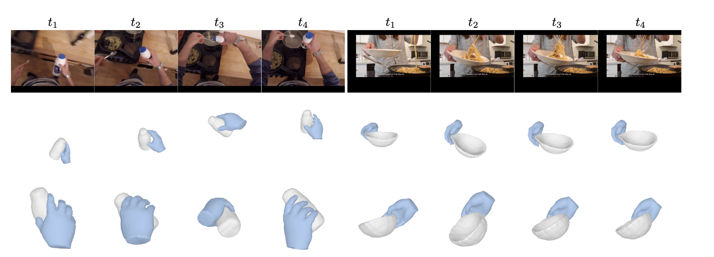 |
Diffusion Guided Reconstruction of Hand Object Interactions from Internet Clips Given a monocular video of a hand interacting with a rigid object, we aim to reconstruct the underlying hand-object interactions, i.e., the 3D shape of the object, its pose in every frame, along with per-frame hand meshes and camera poses. Our key insight is to incorporate both view consistency across multiple frames and a data-driven prior of the geometry of hand-object interactions as the object of interest is often partially observed from everyday clips |
| 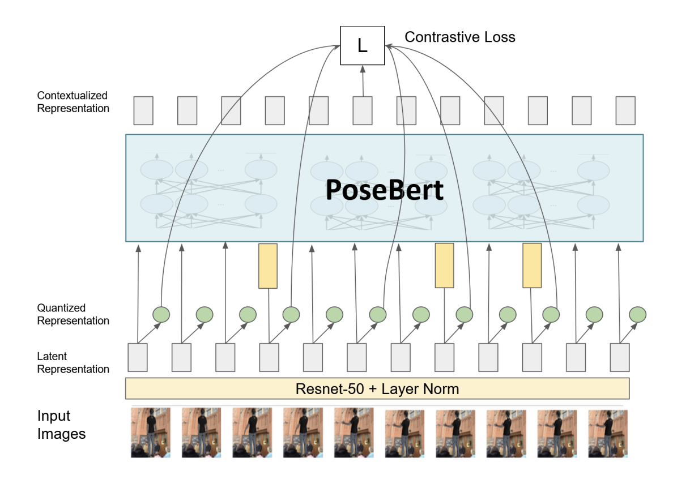 |
3D Pose Estimation and Future Pose Prediction We implement PoseBERT with relative positional embedding to learn pose‑representations from monocular videos. Training the model via a contrastive task (distinguishing true latent from sampled pose‑based negative distractors, we obtain retrieval scores of 277 (259) and estimat pose with 148 (144) MPJPE with(out) a quantizer module. We further use an auto‑regressive OpenAI GPT2 model to predict human motion and achieve competitive mean absolute errors on large-interval (>400ms) actions of the Human 3.6M dataset. Thesis | slides | code |
| 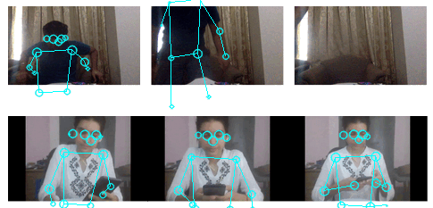 |
Anomaly Detection in Proctoring Videos We developed an LSTM‑autoencoder model based on human pose features to estimate the reconstruction error & degree of anomaly in proctoring scenarios. We validated the formulation on NTU‑RGB & MPI‑Inf and personally-collected video datasets action‑recognition datasets to detect aberrant video segments. The code was later adopted by Codetantra, a national online exam conducting platform in India. We aim to optimize the framework in a synchronous setting using online sub‑modular maximization & video summarization. Thesis | slides | code |
| 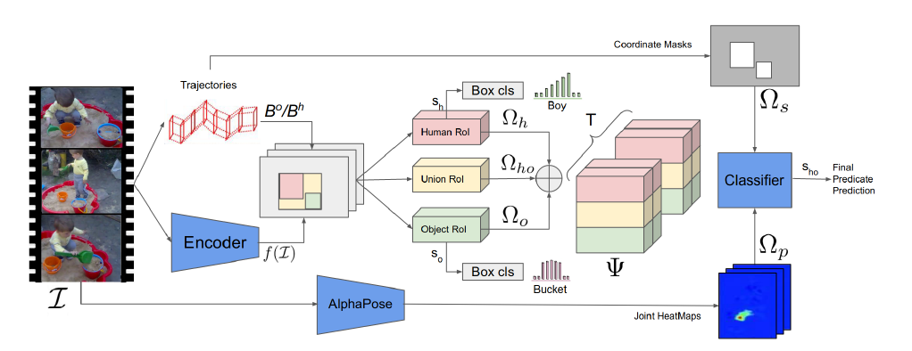 |
Skew-Robust Detection of Human Object Interactions in Videos We extract visual features of humans & objects from the input video segments using ResNext and RoI trajectories and implement a novel framework to discern HOIs in a multi‑label setting by classifying the aggregated RoI features. We have outperformed state‑of‑the‑art methods by a significant margin (8%) on the large scale in‑the‑wild VidHOI dataset. slides | code |
| 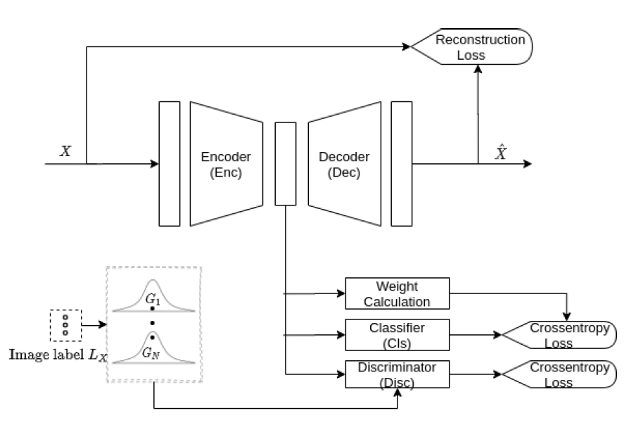 |
Robust Classification of Histology Images Exploiting Adversarial Autoencoders We propose a novel weighing scheme of training instances based on likelihood of the encoded features in latent space. A consistent improvement in the AUC scores is observed, implying a robust feature generation with optimized priors. Classification accuracy of 80.9% was obtained on noisy multi‑labeled histology datasets. paper | report | slides | code |
| 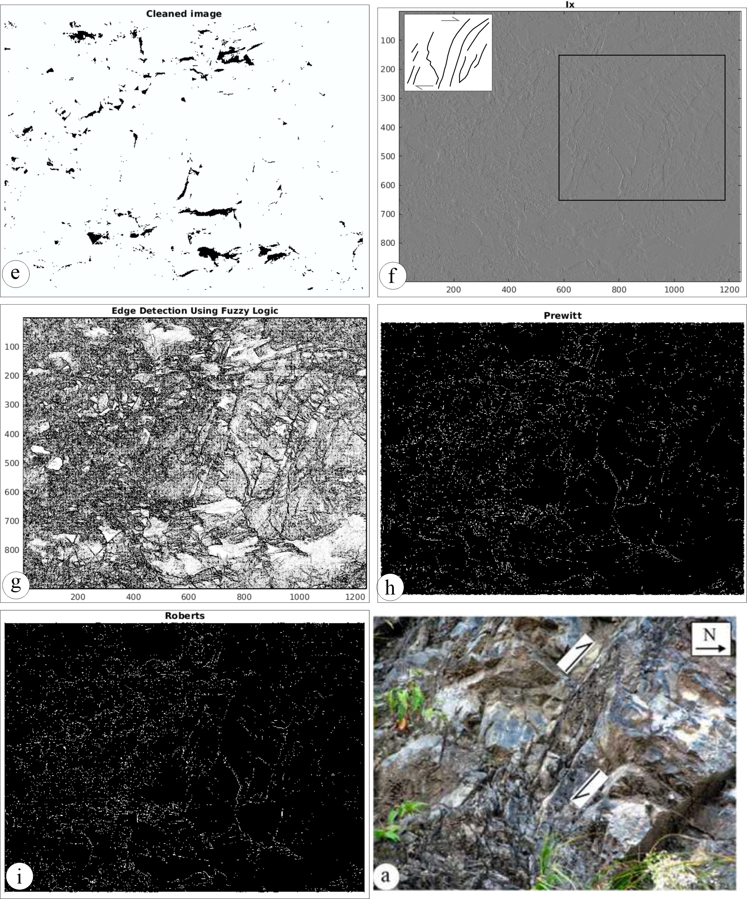 |
Detection of Brittle Shear Zones in Mesoscale Photographs We process images from brittle shear zones to discern fracture planes & their orientation, obscured to naked eye. Using Edge detection & quantization methods, we tried to accurately classify and label fractures without human supervision. paper | report | code |
| 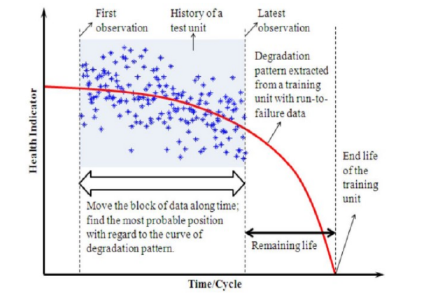 |
Predicting the Remaining Useful Lives of Jet Engines With sensor measurements of jet engines, we designed an optimized pipeline for predicting their Health Indices (HI). We encoded the intermittent data into a series of images with 21 features and filled the gaps using generative images. A Transfer Learning setup was successfully employed to predict the HI of jet engines with as much as 30% input holes. report | code |
Work Experience
|
Qualcomm AI Research |
|
Awards and Scholarships
|
Course projects
| 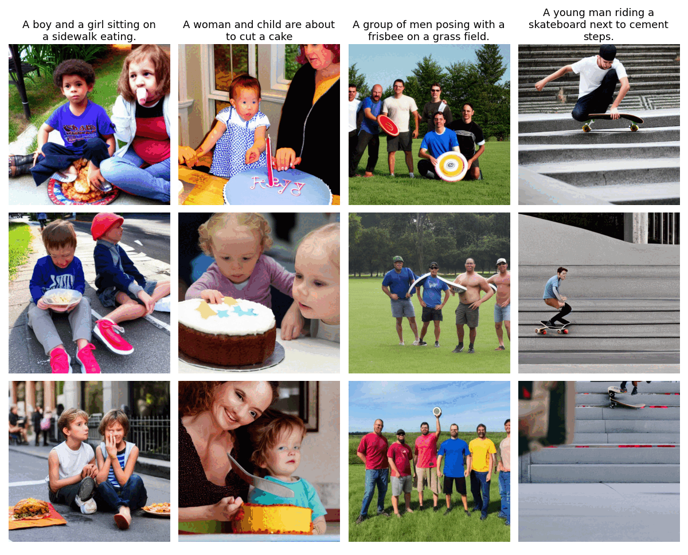 |
Improving Latent Diffusion with perceptual mask-aware loss AI-based image generation has advanced significantly with diffusion models, which combine context using text prompts for realistic and diverse images. However, these models struggle with complex objects like human faces and bodies. This work aims to address this limitation by optimizing diffusion latents using a mask-aware loss on human faces and body. By focusing on important aspects like human faces and poses, this can serve as a foundation for finetuning pre-trained diffusion models on more sophisticated loss functions. slides | report | code |
 |
iNERF for 6D pose estimation We implemented the iNeRF paper leveraging Inverse NeRFs for direct Pose Estimation instead of using 3d-2d correspondences. iNeRF takes 3 inputs: an observed image, an initial estimate of the pose (identity matrix), and a NeRF model representing a 3D scene or an object in the image. Different from NeRF, we start from an estimated initial camera pose and iteratively refine the pose (through gradient descent) following the NeRF rendering procedure to compute the loss with the observed image. iNeRF propagates the gradients to the estimated pose and is hence able to recover the correct camera poses by aligning the rendered and observed images. slides | report |
 |
Facial Emotion Recognition A face emotion recognition system comprises of two step process i.e. face detection (bounded face) in image followed by emotion detection on the detected bounded face. We use feature-based cascade classifiers (real time and fast) to detect frontal face in an image. We then train a classification CNN model architecture which takes bounded face (48 x 48 pixels) as input and predicts probabilities of 7 emotions (happy, neutral, angry, disgust, scared, sad and surprise) in the output layer. report | code |
| 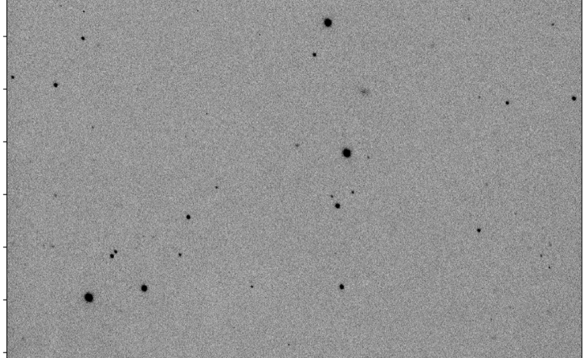 |
Period Verification and Distance Estimation for UZ Com We estimated the time period of UZ Com, an RR Lyrae variable star using 35 images from the GROWTH India Telescope. Employing an automated approach to calculate zero point using the Photoutils library & Aperture Photometry Tool, we verified the period using the peak value of Lomb‑Scargle periodogram. We further used the Period‑Luminosity relation & metallicity to estimate the star’s absolute magnitude, distance & inclusion in an open globular cluster: Latham I slides | proposal | code |
| 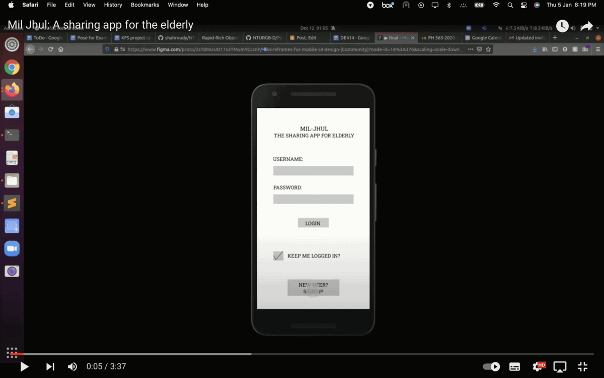 |
Mutual support system for elderly and youth We built an experience sharing platform, MilJhul, to promote cross‑generational interactions and knowledge exchange. A wireframe model was designed as a prototype for the android app in Figma based on insights of the elderly people. blog | prototype |
| 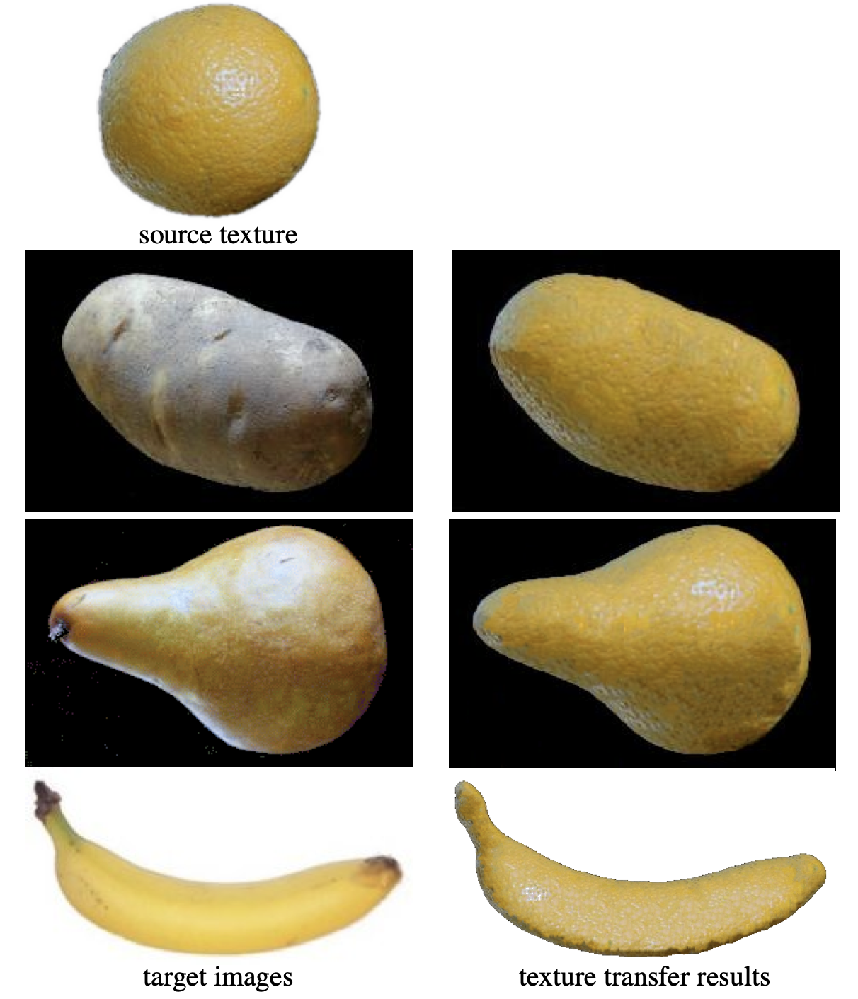 |
Image Quilting for Texture Analysis and Transfer We implemented the original paper to synthesise novel visual appearance of images by coalescing small patches of existing ones. We then extended the algorithm to successfully re‑render an object with a texture transferred from a different 2D image. report | code |
| 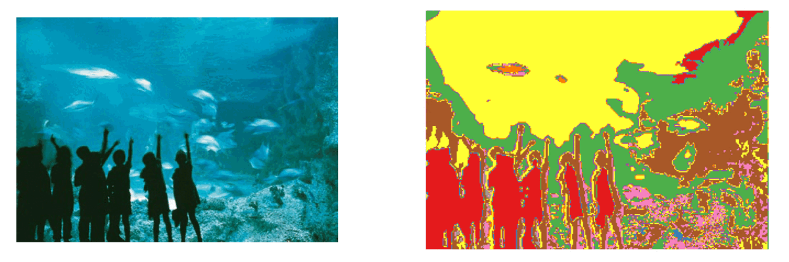 |
Scene Recognition We obtain the vocabulary of visual words with required features through K‑means clustering and PCA on the scenes. Visualization of images as histogram of words was done using the Bag of words and Spacial Pyramid Representation. We then built a Multi‑class Support Vector Machine with 15 binary one‑vs‑all SVMs to classify with 89% validation accuracy. report | code |
| 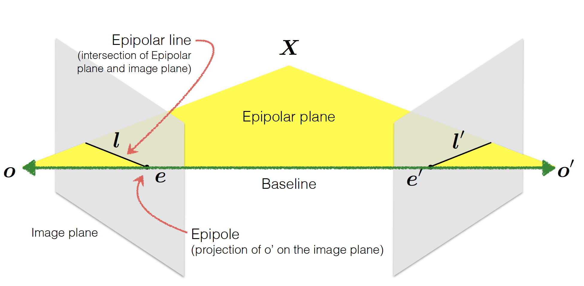 |
Camera Calibration and Stereo Depth Estimation We estimated the camera’s intrinsic and extrinsic parameters by using Zhang’s method on different views of an image. The disparity and the depth map of given gray image pairs was obtained by the plane‑sweeping algorithm. report | code |
|
Secure Personal Cloud We designed an encrypted cloud‑based file system with database management & accessed it securely via a server. We also mplemented backup service using socket programming along with file‑sharing across multiple linux clients, automated synchronization and auto rendering of common media types on the web client ‑ in NodeJS + Django. report | code |
|
| 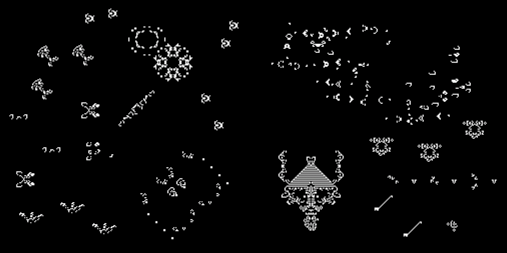 |
Conway's Game of Life Conway-racket is a Conway's game of life implementation on racket (no, not 🎾). We made a simulator with a grid which can be set for multiple sizes, grids and topolozies and which uses many preloadeable scripts to run it. In other words, we programmed a cellular automaton and used the simulator on files encoded with Run-Length-Encoding. report | code |
|
News
|
|
Last updated July 2023. Thanks Jon Barron for the template!
|